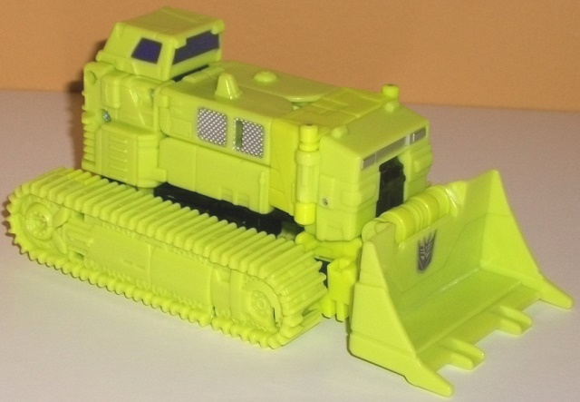 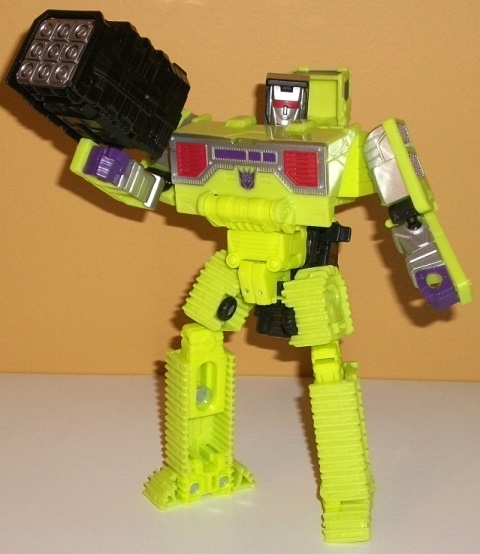
Difficulty of Transformation : Medium
Individual Rating : 8.7
Allegiances
: Decepticon
Size
: Titan ($150 U.S.)
Color Scheme
: Light lime green,
dark milky purple, black, and some silver, moderately dark red, and metallic
yellowish gold
Overall Rating
: 7.7 (mass release);
8.2 (SDCC '15 exclusive release)*
 Bonecrusher
Bonecrusher
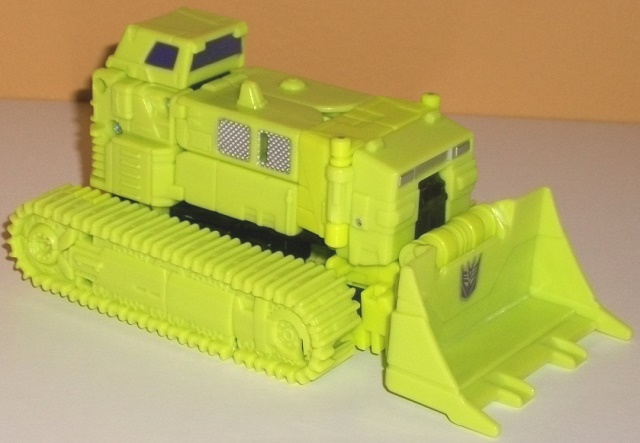
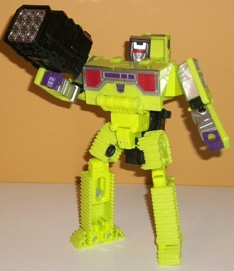
Difficulty of Transformation
: Medium
Individual Rating
: 8.7
Bonecrusher's vehicle
mode is a bulldozer, as it's traditionally been. The proportions are more-or-less
spot-on, though the cockpit area is a bit smaller than you'd think it would
be. There's no robot extras in this mode to speak of, though there is an
odd little gap right in the top because those parts fold out into the arms
and there needs to be some clearance for elbows 'n such. The mold detailing
is pretty darned good on most parts, with the treads spectacularly detailed,
complete with little spoked "wheels" (the actual wheels are little black
things on the bottom of the treads). There's also little vents molded in,
ladders, pistons, exhaust pipes, and the like. The problem-- almost NONE
of all these awesome details are actually painted! The cockpit windows
are painted a nice dark purple, with a bit of silver on some side and front
plates, and the shovel has a Decepticon emblem on it. But other that, this
mode is 95% lime green, with a few small parts (most notably on the back)
being black. Why the heck weren't the treads at least molded in black plastic?
This is
entirely
too much of one color, and it really drags down
what is otherwise an excellent bulldozer mode. As for movement, the shovel
can move up-and-down at two points-- though if you move it up too much,
the robot chest details become obvious on the underside of it.
For Bonecrusher's transformation,
the treads become the legs, the main body section becomes the arms, the
shovel becomes the chest, and the back end section becomes his head and...
back end section. This mode largely looks pretty good (again, lime green
unpainted treads excepted), with little in the way of extras. The cockpit
piece does hang behind the head rather obviously, and a large black piece--
used for the combined arm mode-- sits behind his main body, largely out
of the way but jutting below his crotch a little obviously. Proportionally
his chest is a bit wide, though this is a result of his entire shovel becoming
this piece. It's so wide it makes his head look small in comparison, but
actually it's not-- it's only the chest and the relatively skinny stomach
that make it look that way. Speaking of the head, it's sculpted quite well
(albeit simply-- as is the case with the rest of his robot mode-specific
details), with the red visor and silver chinstrapped face giving him a
rather no-nonsense look. The arms look quite good despite merely being
mostly sculpted into the interior of vehicle parts-- not something I'd
expect to find on a toy that's the size of a small voyager. The difference
is that for most of the Constructicons, they're voyager-sized but roughly
deluxe-sized in their complexity-- partially so that Devastator can be
as big as he can, partially so that they can form solid limbs at such a
size, I'd imagine. The biggest issue I have with this mode is that the
little latches that connect Bonecrusher's legs together at the crotch don't
really latch together very well. They can latch together solidly enough
so that Bonecrusher can stand, at least, but move his legs much at all
and they come undone-- very annoying, and I'm not sure how something like
this was overlooked. Thankfully, from the waist up Bonecrusher's lime-greeniness
isn't the only major color in this mode like his vehicle mode-- there's
silver paint covering his arms, along with purple fists, and a rather nice
bit of robotic detailing on his chest painted silver, red, and dark purple.
There's also a bit of black here and there to help break up this mode some
more as well. (That said, given his legs he's still too lime-green.) For
articulation, Bonecrusher can move at the neck, shoulders, elbows (at two
points), hips, knees (at two points), and slightly at the toes. Not outstanding,
but not bad at all, either. The Constructicons don't usually come with
"set" weapons, but since Bonecrusher forms an arm, I give him the piece
that forms part of the lower arm of Devastator-- a large missile pack in
this mode. It's a rather large, oversized (non-firing) missile pack, but
I do like that the lower arms of Devastator actually turn into something
for the individual Constructicons instead of just being extra pieces set
aside.
Bonecrusher forms the
left arm of Devastator.
 Construction
Hook
Construction
Hook
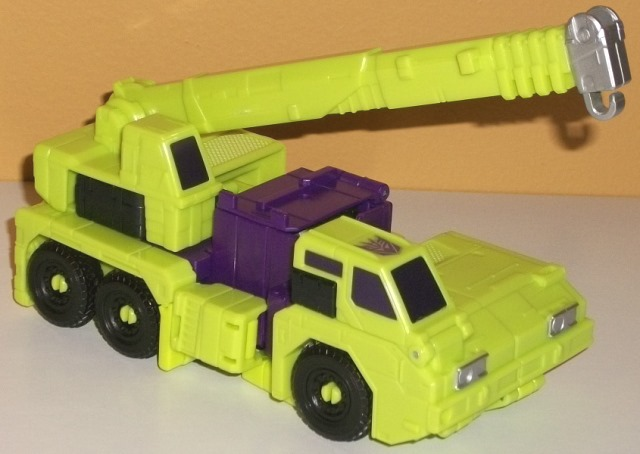
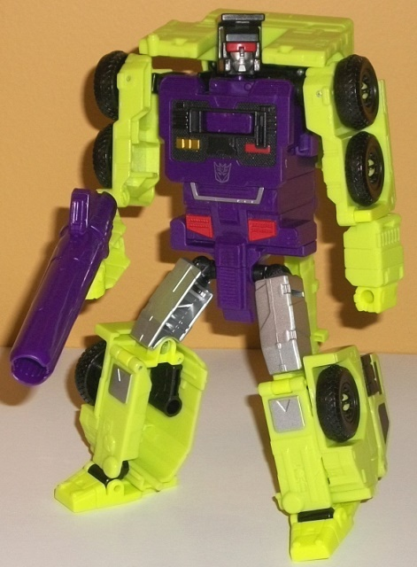
Difficulty of Transformation
: Easy
Individual Rating
: 6.6
Hook's alternate mode
is-- appropriately-- a crane, and though it looks passable, this mode definitely
suffers from the combination aspect. The most obvious downside here is
the big purple box sticking out of the center of this mode, which houses
the Devastator head. Most of the connectors for the upper body of Devastator
are also housed in Hook-- most of the connectors are hidden on the underside
or inside the cockpit sections, which unfortunately means that Hook can't
rotate the rear section that the crane arm is on-- in fact, the crane arm
can only move up-and-down at the point where it connects to the crane,
which is really unfortunate. I don't see why another few points of articulation
couldn't have been added to the top of the crane arm, around the hook area.
Proportionally Hook looks just a TAD wide from the front, but this is a
relatively minor issue overall. As far as robot extras go, beyond the obvious
purple box in the center there isn't much particularly bad. There's a gap
in the rear bumper in which you can clearly see the top of Hook's robot
head, but that's another minor thing, as is the little folded-up stubs
of Hook's lower arms that you can see fairly obviously on the sides of
this mode, near the center. The black connector pieces also throw off the
color balance around the cockpit sections-- just being little black pieces
in areas where they make no sense-- though again, relatively minor. Hook's
mold detailing is quite well-done in this mode, with details like ladders,
vents, and grates across his form, though he's not quite as intricately
detailed as some of the other Constructicons (granted, particularly for
Bonecrusher and Scavenger that's a high bar to meet). Unfortunately, Hook
shares the problem of most of the other Constructicons with not having
enough paint-- the purple head-box in the center helps to break his colors
up some, but he's still got way too much unpainted lime green plastic,
with the black tires, dark purple windows, and silver headlights and hook
not really helping to break it all up that much.
Hook's robot mode transformation
is fairly simple-- it's mostly just folding back some of his vehicle parts
while unfolding his arms from the sides and-- in the only part that's not
incredibly straightforward-- having his legs decompress from the front
section of the crane mode. In robot mode, Hook is rather boxy, even for
a G1-update-- he's pretty much all right angles. He's got quite the backpack,
with his crane arm just hanging there (though it does help with his stability),
and the entire back section is just behind his upper back-- most of it
doesn't get in the way much, except for the back bumper sections around
his head-- they can impair shoulder articulation some, and get in the way
of his "eyesight" from certain poses as well. The way that whole section
hovers just a BIT above his shoulders and gets in the way is my main issue
with this mode. The legs are pretty well-done, being incorporating his
front vehicle parts quite well while also giving him long feet for stability.
The silver paint on his upper legs and knees helps break up that part of
him color-wise, as well. The main body is almost entirely dark purple,
with some rather neat painted details like black sections on his chest
and little red, gold, and silver paint apps on said chest and abdomen.
It really helps break up his colors very well in this mode. In fact, there's
so much paint here I wish a paint app or two would have been removed if
it meant more paint on the vehicle form. The headsculpt is nice and crisp,
but doesn't really have much to differentiate Hook from the other Constructicons--
he's got the usual boxy black head, red visor, and silver face, it's pretty
forgettable. The only issue I really have with the main body is the slight
asymmetrical look of the waist, due to how he splits almost entirely in
half for the gestalt transformation. It's a bit eye-catching in a bad way,
and it makes his legs start a bit lower than they should. Hook's arms are
pretty weak-- the upper arms are too 2-D, looking too skinny from a front-on
view and too hollow from the interior. The lower arms are a bit bulkier,
but they're too short proportionally (particularly in comparison to the
upper arms), and although he can move forward at the elbows, there's an
unsightly gap left in between the two halves of his arms if you do so.
Regarding his articulation overall, Hook can move at the neck, shoulders
(at two points each-- very restricted at one point because of his backpack),
elbows (two points each), slightly inwards at the wrists, and movement
at the hips (at three points eacg), knees, and inward tilts at the ankles.
So he's okay, but not quite as good as I'd expect on a Generations toy
of this size. For weaponry, I prefer to give Hook the front section of
the gestalt weapon-- basically a big long purple cannon, which is straightforward
but does its job well.
Hook forms the chest
and head of Devastator.
 Long
Haul
Long
Haul
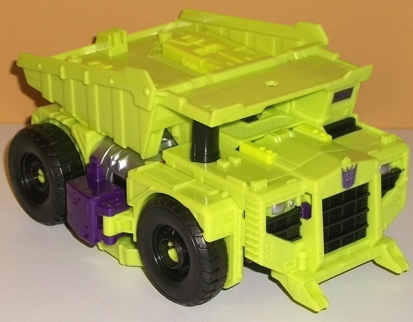
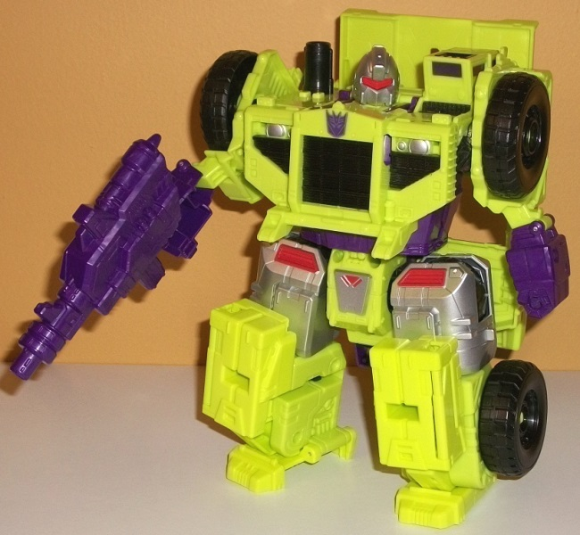
Difficulty of Transformation
: Easy
Individual Rating
: 5.3
Long Haul is a BEFFY,
WIDE dump truck. Now, granted, I know that part of this is that they're
making Long Haul to be one of the biggest dump truck models that there
is... but he's still about 10% too wide. The tire covers stick out from
the sides too much, as do the middle purple sections that sort of just
stick out a bit between his wheels at the sides and are obviously his lower
robot arms. In fact, overall it's difficult to overstate how HUGE Long
Haul is, for better or worse. He's quite close to the size of a Leader
class figure, and about the mass of one due to the mass in his hips with
all the thick ratchets 'n such. Long Haul does have a few fairly obvious
robot parts in his dump truck mode-- specifically on the back half-- but
thankfully, none of these ruin his silhouette, even if the coloring or
the way they fit in with the surrounding parts doesn't quite match up.
From the side, you can see the silver hips on the sides, along with Devastator's
crotch plate sticking out a little from the underside, as it's JUST low
enough where it interferes with the front wheels rolling on a flat surface
(the rear wheels roll just fine, though). On a lesser note, on the backside
there's a definite obvious gap in the middle, in between the two parts
that become Long Haul's robot legs. Parts of the robot lower legs also
stick up from the dump truck bed a bit, though I cna easily forgive this
for a really cool reason. Even though it's not mentioned in the instructions,
Long Haul can store ALL of Devastator's weaponry and extra bits in his
dump truck-- every part has a peg or a slot to fit in. I wish it was mentioned
in said instructions so more people could appreciate it, but if you've
been reading my reviews for a while, you know how much I hate parts that
don't store somewhere in all modes, and Long Haul here takes care of that.
(Unfortunately, the truck bed can not lift up at the back end like on an
actual dump truck-- it's stuck in its set position.) As far as mold detailing
goes, since Long Haul is so much bigger than the others but still is trying
to replicate a fairly small G1 toy, most of his mold detailing is fairly
basic-- what is needed, and little else. The main exception to this is
the front grill section, which has fairly intricate grill/vent detailing,
little ladders going up the sides, and the like. Unfortunately, this is
also where most of Long Haul's paint resides, with the grill being black,
the headlights silver, and a Decepticon symbol painted on the front. Other
than the purple cockpit windows, there's no other paint in this mode. Given
how little of him is of a plastic color other than lime green-- just the
wheels and little "smokestack" on his right side, really-- this means that,
like most of the other Constructicons, he suffers from major paint deficit
in vehicle mode and is just entirely too much lime green.
I'll make it simple
before getting into the specifics: Long Haul's robot mode looks ridiculous.
There's making a robot look big, bulky, and tough, and then there's...
THIS. Long Haul needs to hit the gym something BAD. He's just a little
taller than the other Constructions, but at least twice as wide. His legs
are absolutely ginormous and ridiculously wide, and a bit too short proportionally.
He looks like he should be a lot shorter than he is, given how weirdly
proportioned his thunder thighs and legs are. I understand that certain
sacrificies have to made for the combined mode, but just making Long Haul's
legs Devastator's upper legs with little difference was just... a bad decision.
This is also emphasized by how skinny Long Haul's upper arms are from a
front view, where they're just slim parts of the sides of the vehicle modes
with the front wheels. The lower arms are bulky enough, but laughably short,
and the elbow is molded in a weird position where the lower arms are permanently
extended out further than the upper arms-- another odd decision. That said,
by itself the main body doesn't look too bad-- Long Haul's head is a little
small, but his body isn't TOO wide to move him from the "big bruiser" category
to the "just riduclous" category his limbs fall into proportionally. His
head is sculpted simply (like most of his other robot details), but sculpted
well, with a silver rounded head, an angular mouthplate, and a red visor--
the one Constructicon who has a really different headsculpt. There is also
definitely more paint in this mode than in vehicle mode, with the upper
legs painted almost entirely silver with some red bits, and same with part
of his crotch, as well. The colors are definitely broken up much, much
better in this mode than in vehicle mode, that's for sure. Long Haul's
dump truck bed sits behind him as a pretty obvious extra, and it does interfere
with some articulation (at the waist, particularly), but given how chunky
the rest of his body is it doesn't stick out as much as you'd think it
would, and it pegs into place securely, so I don't mind it that much. For
articulation, Long Haul can move at the neck, shoulders (at two points,
one fairly restricted because of his proportions), outward sideways at
the elbows, waist rotation (restricted considerably because of the truck
bed on his back), and movement at the hips (at two points), knees (at two
points, though given how bulky his lower legs are this isn't really useful
articulation), and inwards a bit at the ankles. So, definitely a bit less
than I'd expect from a toy this big, though much of his restrictions come
from his ridiculous proportions. For weaponry, I tend to give Long Haul
the bigger section of the two-part Devastator gun-- he's the biggest guy,
so it's only fitting he gets the biggest weapon, which has a long of neat
little mold details on it (too bad one of them are painted).
Long Haul forms the
abdomen, waist, and upper legs of Devastator.
 Mixmaster
Mixmaster
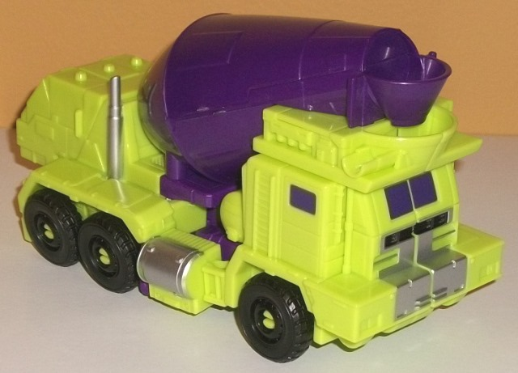
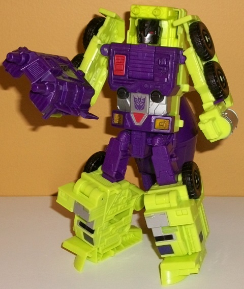
Difficulty of Transformation:
Easy
Individual Rating
: 7.5
Mixmaster is the one
that deviates the most from his original G1 form in vehicle mode. He's
still definitely a cement mixer, but it's the kind where above the driver's
seat is where the concrete is poured out, not with the driver's seat near
the "front" of the barrel like it typically is on other cement truck TFs.
However, despite the mold and paint detailing on that section of the vehicle
mode making it obvious it's intended to be the front, the back end still
resembles the "normal" front of a cement mixer, complete with painted windows
and a leg mode transformation that makes that section the foot, as normal..
thus, it looks very much like this alt mode is "backwards". However, the
proportions are fairly good-- though the front section is a bit "chunky"--
and there's pretty much no robot extras in this mode at all, slightly obvious
hands at the sides aside. Mixmaster rolls on all six wheels quite well,
though unfortunately his mixing drum does not rotate-- the wheels are the
only moving parts in this mode. As with most of the other Constructicons,
Mixmaster has fairly simple mold detailing on most of him, but there are
more intricate details on some places, particularly near the front, where
you can see ladders molded in, as well as pipes and what look like little
circuit board details. Although he doesn't have much more paint detailing
than his Constructicon brethren, Mixmaster's big purple mixing drum in
the middle really helps to break up his colors quite well, and the purple
windows at each end-- plus the silver smokestacks, side fuel canisters,
and front bumper-- keep his colors pretty well broken up except for the
top of the back end. The mixing drum could've used just a little paint,
as well.
Mixmaster's transformation
is pretty straightforward, with the front section splitting into halves
to become his legs while the sides become his arms and his head flips out
from underneath the back section. In robot mode, Mixmaster LARGELY looks
good, though there are a few proportional issues. He has the same fairly
"2-D" arms that some of the other Constructions have, as they look too
skinny from the front (though bulky enough from a side view). The lower
arms are also laughably small compared to the upper, and the articulation
there is such that if you move the lower arms forward at all, there's a
really obvious gap that opens up between it and the upper arms. The legs
are largely pretty decent-- Mixmaster has some clunkers for feet, but they
do keep him fairly stable, and they're not QUITE so big where they look
ridiculous. My main issue with his robot mode here is the big mixing drum
on his lower back-- it really doesn't go anywhere or even move out of the
way if you want to move Mixmaster's legs back at the knee, so not only
is it a big eyesore on his butt, it gets in the way of leg movement at
well. Like with most of the Constructicons' robot modes, the center section
and head of Mixmaster are the best, with some simplistic-but-good-looking
robot mode detailing on the chest and a pretty nice face sculpt. Mixmaster's
is one of the more unique heads of the Constructicons-- yes he's got a
black head, red eyes, and a silver face, but he's actually got seperate
eyes and (gasp!) a mouth. Plus, his black "helmet" isn't blocky-- it's
got some nice ridges and small headcrests, which look nice. As far as colors,
Mixmaster's purple main body-- along with the nice paint detailing on his
chest and waist, what with the red, silver, black, and yellow robotic details--
and the paint on his legs, Mixmaster's colors are broken up much better
in this mode, so no issues there (though the little dual guns above his
head could've used some paint). For articulation in this mode, Mixmaster
can move at the neck, shoulders (at two points), elbows (at two points),
hips (at three points, though on my copy the hips are quite loose, with
the weight of the legs pulling them down due to gravity very easily-- I'm
not sure how common this issue is, though), and movement at the knees and
slight inward tilts at the ankles. Thus, for a Combiner Wars Constructicon
he's got some pretty decent articulation, keeping in mind the mixing drum
getting in the way of leg movement a bit. For Mixmaster's weapon, I give
him the dual-barreled gun that forms the central part of Devastator's chest--
it fits the whole "dual cannon" thing he's got going above his head, as
well.
Mixmaster forms the
left lower leg & foot of Devastator.
 Scavenger
Scavenger
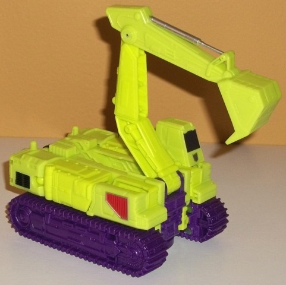
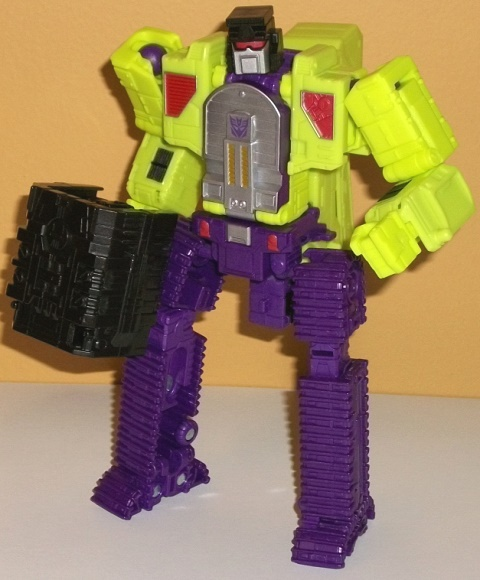
Difficulty of Transformation
: Easy
Individual Rating
: 9.2
Scavenger's alt mode
is an excavator, and in this mode he looks pretty solid, for the most part.
His proportions are largely spot-on, though he's perhaps just a bit TOO
square when the mode should be a little more rectangular, but that's minor.
My chief issue with this mode is that the back end has the robot waist
quite obviously right there, though it does fit in overall with the silhouette
of the mode and nothing sticks out. The top of this mode has a bit of a
gaping slot in it on the right side, where a purple part that's part of
Scavenger's arm is obvious-- other than that, this mode is largely robot
extra-free. The mold detailing is impressive, as it is on most of the Constructicons,
with little things like vents, pistons, riveted-on plates, and the like
everywhere. The treads are particularly detailed, with the "chains" amongst
the tread wheel teeth even molded in. (Just like the other Constructicons,
though, Scavenger's treads don't actually work-- there's little wheels
on the bottom of this mode that roll it along instead.) Scavenger's color
scheme is one of the better broken-up schemes among the Constructicons'
vehicle modes, though this is largely because of an odd choice-- why are
his treads molded in dark purple?! What is it with this set and not having
black treads? Because of this large section of dark purple, though, it
helps give some good contrast against all the lime green on the upper half
of Scavenger, which is underpainted, as per the usual with this set. There's
the usual purple cockpit windows, as well as some black rear vents, red
robotic detailing on the front sides, and silver on the hydraulic piston
on the arm, but that's it. Some of the details on the treads really could've
used some silver paint. Scavenger's articulation in this mode is just disappointing--
his crane arm can move up-and-down at two points on the crane arm and side-to-side
at one point, but the actual bucket end of the arm can't move at all, and
the top section of the vehicle mode can't rotate around at all, either--
a real downer, given that that's sort of how this whole vehicle is supposed
to function.
For Scavenger's robot
mode, his treads form legs pretty much identical to Bonecrusher's, while
the sides of the vehicle mode break up to become his arms and shoulders,
and his head folds out of the center. It's a pretty simple transformation,
particularly for a toy of this size-- though again, as has been said before,
the Constructicons are fairly simple given their size because... well,
part of their whole thing is their size. As far as extras go, Scavenger's
robot mode is pretty good in this respect-- there's a bit of the section
that forms part of the lower gestalt arm sticking out below his crotch
a little, but that's it. I suppose you could argue that the vehicle arm
on his back is an extra, but that's sort of Scavenger's "thing", and it
can hang over his head menacingly like some sort of mecha-scorpion tail
if you so choose. Scavenger's proportions are pretty great, too-- his arms
are nice and thick as you'd expect a Constructicon's to be, his main body
has a nice solid core with sections added to help widen it out at the shoulder,
and his legs are largely well-done as well, though they stick out from
the side of the hips a bit TOO much. The robot mode-specific detailing
is a bit simplistic compared to the vehicle mode detailing, but still well-done--
the curved silver-and-gold detailing on the chest is well-done, as is the
silver-and-red paint apps on his waist and shoulders. The black vents from
vehicle mode on his lower arms help to break up those bits, too. The headsculpt
is a bit weird with an odd square faceplate, but it's accurate to G1, and
has the usual silver face, red visor, and black boxy head like most of
the other Constructicons. The legs are unfortunately all purple, making
it look like Scavenger has weird Hulk pants on-- they could've used some
paint badly, but other than that he's pretty good. For articulation, Scavenger
has it pretty good-- he can move at the neck, shoulders, elbows, slightly
at the wrists as part of his transformation, and at the hips (at two points),
knees (at two points), at each toe slightly, and inwards at each ankle.
I don't like how his arms sort of "split in half" if you move them forward
at the elbow, but otherwise he looks nice pulling off all those poses--
and this isn't counting the aforementioned vehicle arm articulation, as
well. Since Scavenger forms an arm like Bonecrusher, I give him the same
weapon-- the other oversized black missile pack, which is identical to
Bonecrusher's (with the hand inside flipped, of course).
Scavenger forms the
right arm of Devastator.
 Scrapper
Scrapper
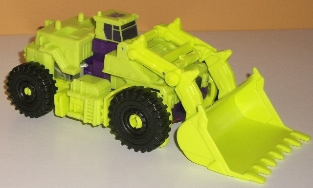
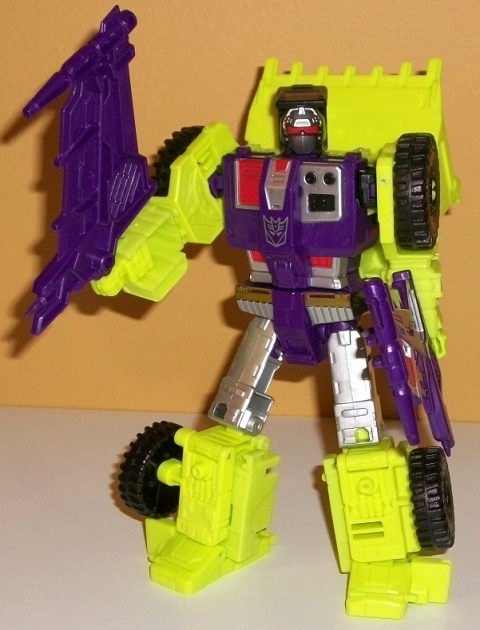
Difficulty of Transformation
: Easy
Individual Rating
: 8.1
Scrapper's vehicle mode
is an earth mover, and he largely looks decent in this mode, at least when
it comes to general proportions. The only weakness Scrapper has in this
respect is the middle section-- the purple section represents a rather
clear "break" in the otherwise straight top of the mode and looks a bit
off, and the cockpit section is curiously small proportionally. On the
plus side, there are very few robot extras in this mode, both of them fairly
minor. On the back side, there's a rather obvious gap in between the sections
that turn into Scrapper's legs, though it's not nearly as big/bad as it
is on, say, Hook. On the front, the top of Scrapper's robot head pokes
out just a tad, though it wouldn't even really be noticeable if it wasn't
for the very different black coloration compared to its surrounding lime
green & purple parts. The mold detailing in this mode is a bit more
complex than on your average Constructicon, with little ladders, vents,
(unpainted) lights, hydraulic cylinders, and the like molded pretty much
everywhere on the main body of the vehicle-- the shovel arm is the only
part where I'd say the detailing gets a bit simplistic, here. However,
Scrapper's biggest downside in this mode has nothing to do with the mold
itself, but the almost complete lack of paint-- seriously, the purple windows
and the Decepticon symbol on the roof are the ONLY paint apps visible in
this mode-- otherwise he's almost entirely lime green with just a bit of
purple in the center and black wheels. They either should have broken up
his plastic colors more or swapped some paint from his robot mode or other
toys to this mode-- this is just unacceptably unpainted. As for articulation,
the shovel arm can move up-and-down at two points, allowing for a bit of
movement.
Scrapper's transformation
is one of the easiest of the bunch-- you basically just separate his arms
at the side, pop up his head, rotate his shovel back, and then unfold his
legs. That's it. The end result is a (mostly) good robot mode. Most of
the vehicle parts fit in with his general silhouette pretty well-- in my
opinion the shovel bits sticking up behind his head and shoulders helps
to make his silhouette a bit more unique, though from the side it looks
a bit more unsightly given how far back it goes in comparison to how thick
his main body is. The only proportional maladies Scrapper suffers from
are the arms-- unfortunately, like most of the other Constructicons. They're
two 2-D from the front, looking too skinny, though they're of more acceptable
girth from a side view. His arms are also too short, and-- in a move I
can only assume was for safety reasons given that they form the heel of
the combined mode, as otherwise leaving something like this out is nuts--
the elbows can only rotate, they can't move and back-and-forth-- unacceptable
for a toy of this size in the "Generations line", in my opinion. On the
plus side, the legs are pretty well-proportioned, and the body has a ton
of paint apps on it-- simplistic-but-well-sculpted robotic details including
the colors of silver, black, red, and gold on the chest, and waist. Again
it looks great, but I would've preferred a few less here and a few more
in vehicle mode. The robot headsculpt is also quite crisp, being the usual
Constructicon square & black while having a rounded silver forehead
and faceplate, as well as a red visor. For articulation, Scrapper can move
at the neck, shoulders (at three points), rotation at the elbows, slight
inwards movement at the wrists due to the transformation, and movement
at the hips (at three points), knees, and slightly inwards at the ankles.
Thus, elbows aside, he's got articulaion on par with his teammates. For
Scrapper, I give him what are pretty much the weakest weapons of the bunch--
the two sides of the gestalt chest piece, which I guess form oversized
swords? Kinda weak, either way.
Scrapper forms the right
lower leg & foot of Devastator.
 Constructicon
Devastator (Combined Form)
Constructicon
Devastator (Combined Form)
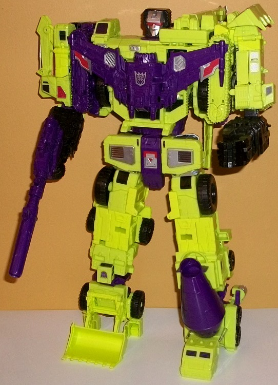
Difficulty of Transformation
: Very
Hard
Individual Rating
: 8.6
I'll say this for the combined form transformation-- it's considerably more complex than I would've figured on a modern Transformer. Getting the leg and chest pieces connected just right is particularly complex. It's not annoyingly so-- you don't have to "finangle" parts into place very much, the steps are quite clear-- but it DOES take a while the first few times, so this set is not for people without a lot of patience or younger kids. That said, the end result is quite impressive-- he's about a third taller than your "normal" Combiner Wars combiner, though unlike your typical voyager & deluxe combiner from the line, the limbs are NOT interchangeable; the configuration you see above is the only configuration-- which is just as well, the G1 version was the same way as well. Devastator's proportions are largely pretty good, though his legs are a TAD longer than it seems like they should be, at least below the knee. The only MAJOR proportional problem I have with Devastator is that, even for a gestalt, he has a PIN head. It is just TINY proportionally, though at least the sculpting on it is very well-done, with the red and silver paint pointing out the visor, face, and forehead very well. There isn't much vehicle kibble, at least that doesn't fit in with the overall silhouette and idea that he is indeed a combination of a bunch of different construction vehicles. The only things I would say stick out a bit too much are the crane hook and bit next to the left side of his head-- couldn't that have folded away a bit more?-- and a shell of most of the sides of Long Haul's vehicle mode are behind the stomach and butt area. Unfortunately this can interfere with waist rotation a bit, but at least when viewed from the front you can barely see it so it doesn't ruin Devastator's overall waist silhouette. On a lesser note, there is a open hollow box right behind Devastator's head-- gee, I wonder what it's for?-- though it stays out of sight in most frontal angles. Mixmaster's lower arms stick out a little obnoxiously behind the heel-- only one extra joint and they could've folded away well against the back of the foot. (And speaking of the feet, Devastator is surprisingly stable, considering how Scrapper's foot almost looks like it's on "stilts"-- the shovel locks into place quite securely for foot mode.) The color scheme is largely broken up better on the combined form than on the individual 'bots, with the purple of the chest, black of the lower arms, and various silver and red paint apps helping to break up all the green-- with the exception of the Scrapper leg, which still has waaay too much lime green. The wings and the bulkier gun come together to form Devastator's chest piece, which works very well against the surrounding colors and actually covers up some very unsightly gaps that would otherwise be very obvious in his chest there-- it's very much required to keep Devastator's chest stable-looking, not just an optional extra. The missile racks become Devastator's lower arms, and they look great-- the lower arms are roughly proportional (maybe SLIGHTLY smaller than expected, but not by much). Each hand can rotate at the wrist, as well as movement at the knuckles (all four fingers as one piece). For the rest of Devastator's articulation, he can move at the neck, shoulders (at two points), elbows (at two points on the left arm and three on the right), somewhat restricted waist rotation, and movement at the hips (at three points), knees, and slightly at the ankles on the Scrapper leg. It's pretty impressive for a gestalt made of six 'bots without a bunch of extra parts attached. For a weapon, Devastator has a gun formed from two smaller guns, and it slots into his hand pretty securely (provided you close the hand, of course).
The Combiner Wars Devastator set isn't perfect-- looking at you, Long Haul, lack of paint apps, and tiny gestalt head-- but generally you're getting a lot of play value here for $150-- considerably more than you got with Metroplex for $125, given how playable most of the Constructicons are. The arm bots are quite solid, the leg bots also solid though a bit weaker, with the torso bots being the only ones I'd consider medicore-to-bad. This is even ignoring the whole combined form, which is merely the topping to an already pretty good cake. Highly recommended if you have the funds (and patience for the combination transformation)-- this is definitely a good update to the G1 Constructicons while modernizing a few things like articulation and proportions.
Reviews by Beastbot
*In addition to the mass release versions pictured above, a SDCC 2015-exclusive release was also made of the toy. For an extra $30-- $180 U.S.-- the toy came with considerably more paint applications, a different head sculpt with separate eyes, and much of the purple plastic replaced with violet chrome. The paint applications negate most of my issues with the under-detailed vehicle modes and is a big bonus-- however, I think the violet chrome is a bit gaudy, and of course there's the fact that this version is harder to get and is an extra $30. The headsculpt doesn't honestly change anything to me; I can take the visor or the separate eyes just as well. Still, I think overall the SDCC release is a bit better because of all those extra paint apps. My advice? If you're one who likes to display your toys and not play with them much, go for the SDCC version. If you want to handle this toy a lot-- or are simply on a tighter budget, of course-- go for the mass retail version.